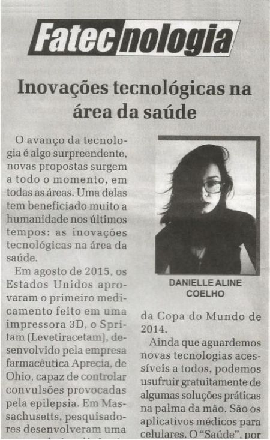
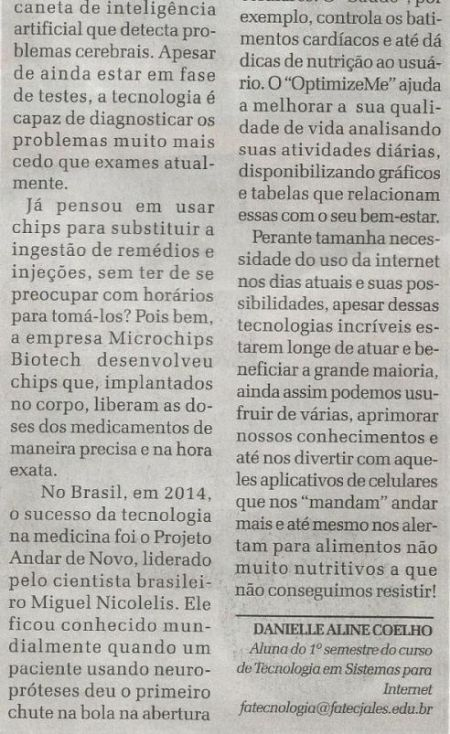

Leitura e Produção de Textos
Profa. Selma Marques da Silva Fávaro
• Objetivo do curso:
Ampliar o domínio da comunicação escrita e oral por meio da aprendizagem e produção de textos existentes no âmbito acadêmico e tecnológico. Favorecer a interpretação de textos relativos à área do curso.
A IMPORTÂNCIA DA LÍNGUA PORTUGUESA
O estudo da Língua Portuguesa entende a importância de falar e escrever bem, seja na forma culta ou popular.
A importância de se aprender as regras gramaticais, para se escrever textos melhores, aumenta a cada período, tanto em nossa vida diária quanto na nossa vida profissional.
A aprendizagem é constante, pois sempre será possível nos depararmos com situações nas quais deveríamos utilizar gêneros que não conhecemos tão bem, ou até mesmo que desconhecemos.
O processo ensino/aprendizagem deve basear-se em propostas interativas a fim de promover o desenvolvimento de cada indivíduo de modo integral.
A língua Portuguesa é um universo amplo e acessível, além de oferecer o instrumento fundamental para o ser humano: a comunicação.
Com a aprendizagem e o aprimoramento do estudo da Língua Portguesa no curso, neste primeiro semestre tive o privilégio de ter um artigo escrito em sala de aula, publicado no Jornal de Jales, no dia 30 de outubro de 2016.
Tal realização motivou-me ainda mais para continuar aprendendo nossa linguagem; aumentando meu interesse de melhorar cada vez mais para que outras oportunidades como esta possam surgir em minha vida, favorecendo meu crescimento pessoal e profissional.
 